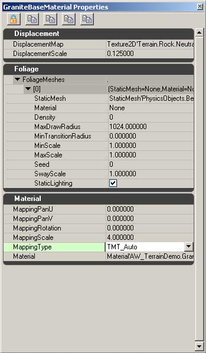
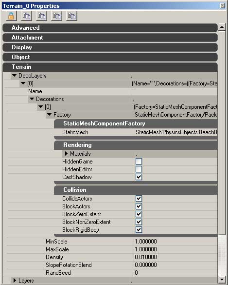

UDN
Search public documentation:
SettingUpTerrainJP
English Translation
中国翻译
한국어
Interested in the Unreal Engine?
Visit the Unreal Technology site.
Looking for jobs and company info?
Check out the Epic games site.
Questions about support via UDN?
Contact the UDN Staff
中国翻译
한국어
Interested in the Unreal Engine?
Visit the Unreal Technology site.
Looking for jobs and company info?
Check out the Epic games site.
Questions about support via UDN?
Contact the UDN Staff
Unreal Engine での Terrain の設定
ドキュメント概要： テレインをセットアップする手順に関する概要。 ドキュメントの変更ログ： Alan Willard により作成。Richard Nalezynski? により管理。Terrain アクタの作成
[Tools] (ツール) メニューから [New Terrain] (新しいテレイン) を選択します。次に、ワールド内における位置とパッチ数を設定します。[Finish] (完了) を選択して新しいテレインを作成します。 テレインを配置するもう 1 つの方法として、Actor ブラウザでアクタツリーの [Info] ブランチを開きます。この下に [Terrein] があります。
テレインを配置するもう 1 つの方法として、Actor ブラウザでアクタツリーの [Info] ブランチを開きます。この下に [Terrein] があります。
 これを選択し、メインのエディタ ビューポートへ戻ります｡テレインを配置した際、テレインの左下の角がくる位置を探します（後でテレインは動かすことが出来ます）。テレインを配置する場所を右クリックし、他のアクタとまったく同様の方法で追加します｡これにより、ひとつのテレインのクワッドが突き出したテレイン アクタが作成されます｡これは、テレインのデフォルトはテレインのひとつの行と列に設定されているためです｡
これで、テレイン パッチの 1 つの 4 x 4 のクワッドが突き出したテレイン アクタが作成できるはずです。これは、テレインの初期設定が、MaxTesselationLevel が 4 であるような 4 x 4 のテレイン パッチに設定されているからです。
エディタの非透視図では、これが 2 つの三角形から成る 1 つの四角形として表示されるのが、以下で分かります。透視図では、最大解像度でのレンダリングにより、テレインは パッチの 4 x 4 グリッドとして表示されます。
これを選択し、メインのエディタ ビューポートへ戻ります｡テレインを配置した際、テレインの左下の角がくる位置を探します（後でテレインは動かすことが出来ます）。テレインを配置する場所を右クリックし、他のアクタとまったく同様の方法で追加します｡これにより、ひとつのテレインのクワッドが突き出したテレイン アクタが作成されます｡これは、テレインのデフォルトはテレインのひとつの行と列に設定されているためです｡
これで、テレイン パッチの 1 つの 4 x 4 のクワッドが突き出したテレイン アクタが作成できるはずです。これは、テレインの初期設定が、MaxTesselationLevel が 4 であるような 4 x 4 のテレイン パッチに設定されているからです。
エディタの非透視図では、これが 2 つの三角形から成る 1 つの四角形として表示されるのが、以下で分かります。透視図では、最大解像度でのレンダリングにより、テレインは パッチの 4 x 4 グリッドとして表示されます。
テレイン プロパティ
 NumPatchesX と NumPatchesY を好きな値に設定し拡張してください。ここで設定された値は、テッセレーションが行われる前のテレインの最高密度です。デモンストレーションの目的のために、X と Y ボックスに 16 個のパッチがあると仮定します。初期設定のマテリアルがマップされた広く平たいプレーンがあります。次にテレインのためのレイヤー セットアップを作成する必要があります。
テレイン プロパティに関する完全な資料は、 テレインの使用 ページを参照してください。
NumPatchesX と NumPatchesY を好きな値に設定し拡張してください。ここで設定された値は、テッセレーションが行われる前のテレインの最高密度です。デモンストレーションの目的のために、X と Y ボックスに 16 個のパッチがあると仮定します。初期設定のマテリアルがマップされた広く平たいプレーンがあります。次にテレインのためのレイヤー セットアップを作成する必要があります。
テレイン プロパティに関する完全な資料は、 テレインの使用 ページを参照してください。
テレインのレイヤーの作成
レイヤーはテレイン上で異なる２つの方法で使用されます｡ひとつめは手続き的な設定で、レイヤーにはマテリアルと、そのマテリアルが使われる場所を指定するパラメータのリストが含まれています｡これによりアーティストは、高さと傾斜に基づいてエリアに特定の外観を持たせることが出来ます｡ひとつのレイヤーに複数のテレイン マテリアルを持たせることが可能で、各テレイン マテリアルにはそれぞれテレイン上でどのように使用されるかを指定するパラメータが含まれています｡ テレイン レイヤーが使用されるふたつめの方法は、Unreal Engine 2.0 とそれ以降での方法と似ており、各レイヤーにはひとつのマテリアルが含まれ、アーティストはエリアをペイントするためにどのレイヤーでも使えるというものです｡これらふたつの方法は組み合わせることも出来ます。手続き的なレイヤーはエリアの大半を定義するために使い、マテリアルをひとつ使う方法ではエリアにディテールを加えたり、再定義（原っぱの中の小道をペイントするなど）するために使います｡テレイン マテリアル

テレイン マテリアルは、好みのマテリアルをテレイン レイヤーへレンダリングします。その他にもアーティストが変位やフォリッジを加えたり、テレイン上のマテリアルのスケーリングを変えてカスタマイズできる多くのプロパティがあります。 テレイン マテリアルを作成するには、ブラウザで [file](ファイル)->[New](新規作成)を選択し、 "TerrainMaterial" を選択するか、ブラウザ（または何もないところ）で右クリックして、 "New TerrainMaterial"(新しいテレイン マテリアル) を選択します｡オブジェクトを指定するようプロンプトが表示されます｡これが済んだら、新しいオブジェクトを右クリックして "Property"(プロパティ) を選択します｡これにより、プロパティ ウィンドウが３つのロールアウトとともに開きます｡ Displacement には、このマテリアルでDisplacement マップを利用する際の設定が含まれ、Foliage にはテレイン上でレンダリングするメッシュが数多く含まれ（セクション３で説明）、Material にはテレイン上にピクセル シェイダーをレンダリングするためのプロパティがすべて揃っています｡Displacement
変位マップはグレースケールのイメージを使い、テレインの頂点をサーフェスの法線に沿って動かします｡変位マップを作成するには、アルファ チャンネルを保存できるペイント プログラムでテクスチャを作成します｡32ビットの .TGA で保存し、圧縮の設定を TC_DisplacementMap にして Unreal Engine 3.0 へインポートします｡このテクスチャを、TerrainMaterial の DisplacementMap フィールドに使います｡ DisplacementMap フィールドの下のスケーリング ファクタは、DisplacementMap の強さを調節します｡Foliage
Foliage contains an empty array, which can be added to by clicking on the + symbol that appears on the right side of the FoliageMeshes rollout. Adding an entry to this array will reveal a set of options that determine where and how the assigned mesh will render. StaticMesh - Foliage として使うメッシュを入力する Material - メッシュに割り当てられているマテリアルをオーバーライドする Density - クワッド毎のメッシュの数 MaxDrawRadius - メッシュが見える限りの最大距離 MinTransitionRadius - メッシュがブレンド/スケール インするのを停止するまでの最大距離 MinScale - 一定のスケール モディファイヤ MaxScale - 一定のスケール モディファイヤ Seed - ランダムな配置を設定 SwayScale - 風のソースを増幅 StaticLighting (フラグ) - Foliage のライティング スタイルのスイッチMaterial
Material には、シェイダーがテレイン上でどのようにマップされるかを指定するオプションが含まれています｡ MappingPanU - U に沿ってデフォルト マッピングをオフセット MappingPanV - V に沿ってデフォルト マッピングをオフセット MappingRotation - デフォルトの回転をオフセット MappingScale - テレイン上でシェイダーを均一にスケール MappingType - テレイン上で使うマッピング プレーンを決定 Material - テレイン上で使うシェイダーを決定Terrain Layers
 TerrainLayerSetup のオブジェクトは、Terrain レイヤーを作成するために使われます｡TerrainLayerSetup の作成はテレイン マテリアルの作成とほぼ同じですが、使用するシェイダーを割り当てる代わりに、ここではTerrainMaterialsを割り当てます｡
TerrainLayerSetup はテレイン マテリアルをいくつでも持つことが出来ますが、上から順番に重なるということを覚えておく必要があります｡これは、エントリ [0] はエントリ [1] の上にレンダリングされることを意味します｡
下はTerrainLayerSetup の設定のリストです｡
UseNoise - テレイン マテリアルのノイズを有効にするためこのフラグを設定する。
NoiseScale - UseNoise が有効になっている場合、ノイズのスケーリングの値を決定。
NoisePercent - このマテリアルがどれくらい騒がしくなるかを決定｡ 値は0.00 から 1.00｡
Min/MaxHeight - 手続き型テレインのテクスチャリングに使用される｡テレインがプロパティで設定されている範囲内である場合、このマテリアルがレンダリングされるようにする。
Enabled - フラグが付いている場合、手続き型テクスチャリングのブランチが有効化される。
Base - このマテリアルをクランプするためのワールド スペースの値｡テレインの高さが最低 128 で最大 1024 の間である場合、マテリアルは表示されるのみ｡
NoiseScale - ベースの高さに影響を与えるノイズの度数｡値が小さいほどノイズは大きくなる｡
NoiseAmount - ベース アマウントに追加されたノイズ量。
Min/MaxSlope - 手続き型テレインのテクスチャリングに使用｡テレインの角度がプロパティでの設定範囲内である場合、マテリアルをレンダリングする｡
プロパティのほとんどは 最低/最高 高さと同じです｡
Base 傾斜の角度を意味する｡ 0 は 0 度、1 は 45 度、90 度までは無限大を指す｡
Alpha - テレイン上にレンダリングする、テレイン レイヤーのこのセクションの総体的な強さ｡ .5 の値を設定すると、現在のテレイン マテリアルを、テレイン上で半分不透明な状態でレンダリングする｡
Material - レイヤーのこの部分で使われるテレイン マテリアル
TerrainLayerSetup のオブジェクトは、Terrain レイヤーを作成するために使われます｡TerrainLayerSetup の作成はテレイン マテリアルの作成とほぼ同じですが、使用するシェイダーを割り当てる代わりに、ここではTerrainMaterialsを割り当てます｡
TerrainLayerSetup はテレイン マテリアルをいくつでも持つことが出来ますが、上から順番に重なるということを覚えておく必要があります｡これは、エントリ [0] はエントリ [1] の上にレンダリングされることを意味します｡
下はTerrainLayerSetup の設定のリストです｡
UseNoise - テレイン マテリアルのノイズを有効にするためこのフラグを設定する。
NoiseScale - UseNoise が有効になっている場合、ノイズのスケーリングの値を決定。
NoisePercent - このマテリアルがどれくらい騒がしくなるかを決定｡ 値は0.00 から 1.00｡
Min/MaxHeight - 手続き型テレインのテクスチャリングに使用される｡テレインがプロパティで設定されている範囲内である場合、このマテリアルがレンダリングされるようにする。
Enabled - フラグが付いている場合、手続き型テクスチャリングのブランチが有効化される。
Base - このマテリアルをクランプするためのワールド スペースの値｡テレインの高さが最低 128 で最大 1024 の間である場合、マテリアルは表示されるのみ｡
NoiseScale - ベースの高さに影響を与えるノイズの度数｡値が小さいほどノイズは大きくなる｡
NoiseAmount - ベース アマウントに追加されたノイズ量。
Min/MaxSlope - 手続き型テレインのテクスチャリングに使用｡テレインの角度がプロパティでの設定範囲内である場合、マテリアルをレンダリングする｡
プロパティのほとんどは 最低/最高 高さと同じです｡
Base 傾斜の角度を意味する｡ 0 は 0 度、1 は 45 度、90 度までは無限大を指す｡
Alpha - テレイン上にレンダリングする、テレイン レイヤーのこのセクションの総体的な強さ｡ .5 の値を設定すると、現在のテレイン マテリアルを、テレイン上で半分不透明な状態でレンダリングする｡
Material - レイヤーのこの部分で使われるテレイン マテリアル
Decoration Layers

Decoration Layersは、テレインに詳細なオブジェクトを加えるために使います｡これらのオブジェクトはプレーヤーに対しフルで衝突し、ライティングを受け、影を落とします｡ ひとつのDecoration Layersに複数の静的メッシュを持たせることは可能ですが、この場合レイヤーがペイントされる際に、割り当てられるメッシュがレイヤーからランダムに選ばれます｡複数の装飾レイヤーを作成すると、メッシュを配置する際によりしっかりとコントロールすることが出来ます｡ Decoration Layersはテレイン アクタの Terrain プロパティのすぐ下に表示され、レイヤーはその他のエレメントのダイナミック アレイと同様の方法で加えることが出来ます｡これらのレイヤーにはそれぞれ Name フィールドがあり、テレイン ツールの中に表示されます｡ Name の下はもうひとつのアレイ、 Decorations です。このアレイでエレメントを作成すると、メッシュが何に使われどのように表示されるか、テレインの上ではどのように配されるかが、設定によって明らかになります｡ Factory -StaticMeshFactory を定義します｡ここでは、メッシュが何に使われるのか、メッシュはゲーム内またはエディタでは表示されるのか、影を落とすのか、プレーヤやワールドとはどのように衝突するのかが設定できます｡
MinScale - メッシュが表示される最小のスケール。
MaxScale - メッシュが表示される最大のスケール。
Density - ペインティングの際に配置されるメッシュの密度。
SlopeRotationBlend - テレイン上にペイントされるメッシュに渡されるテレイン角度の割合。
RandSeed - メッシュの配置のためのランダム シード。